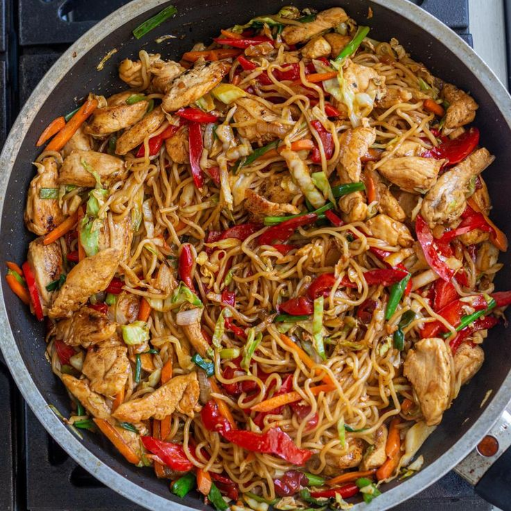
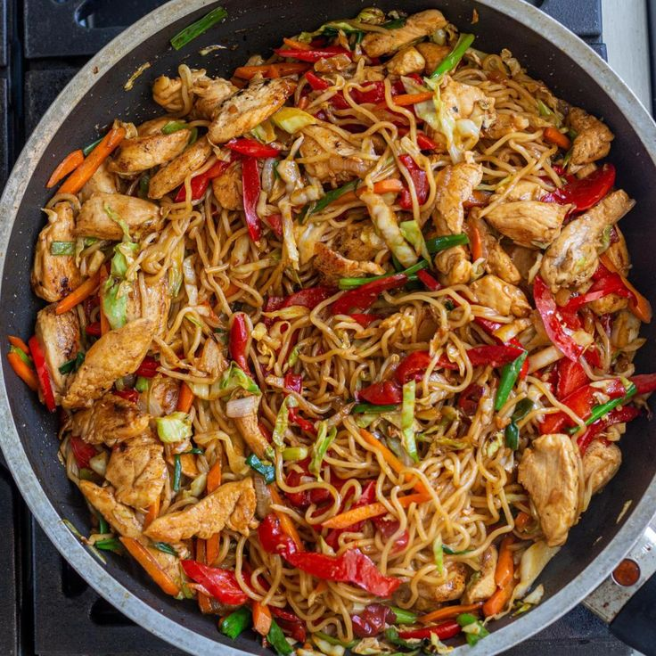
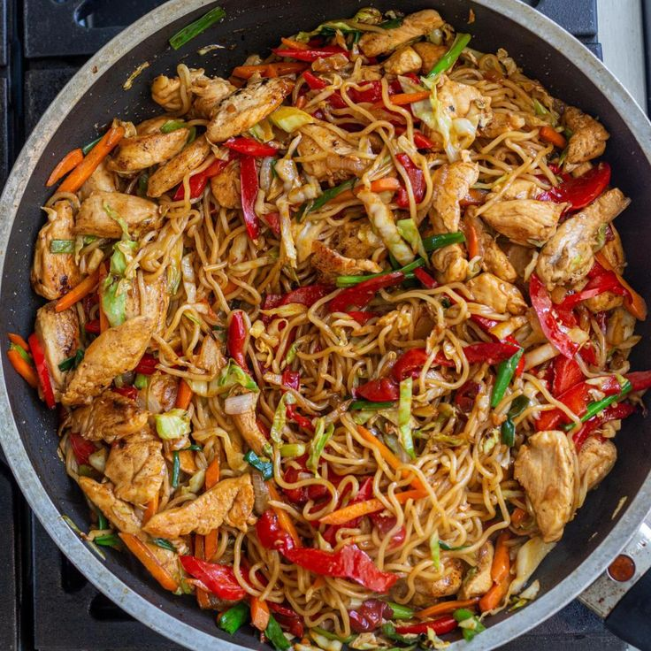

Yakisoba is a classic Japanese stir-fried noodle dish that’s seasoned
with a sweet and savory sauce similar to Worcestershire sauce. Use any
proteins you like—pork, chicken, shrimp, or calamari. For vegetarians,
just swap it with tofu or shiitake mushrooms.
